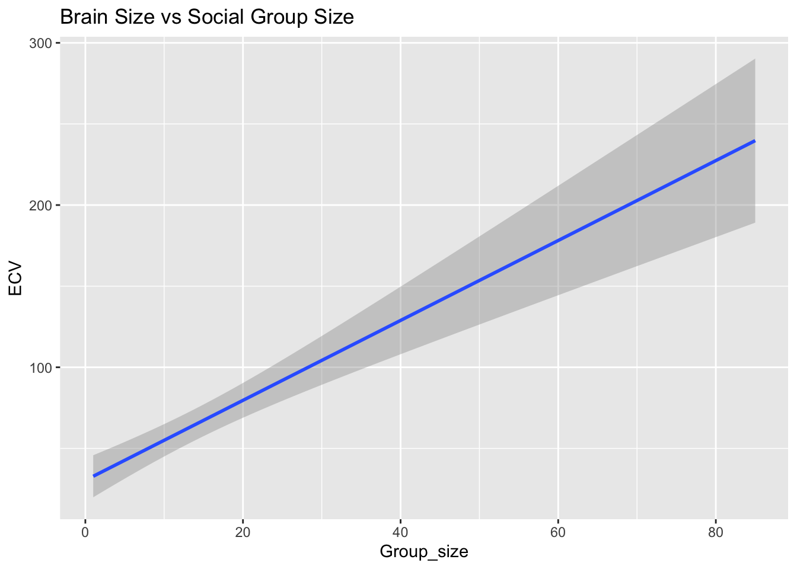
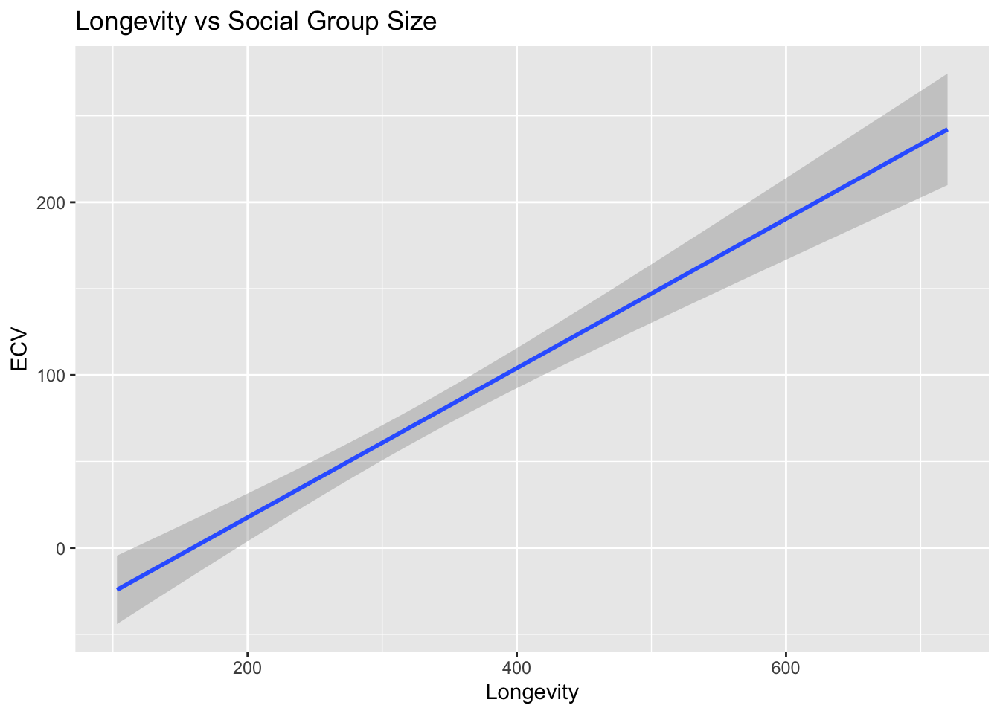
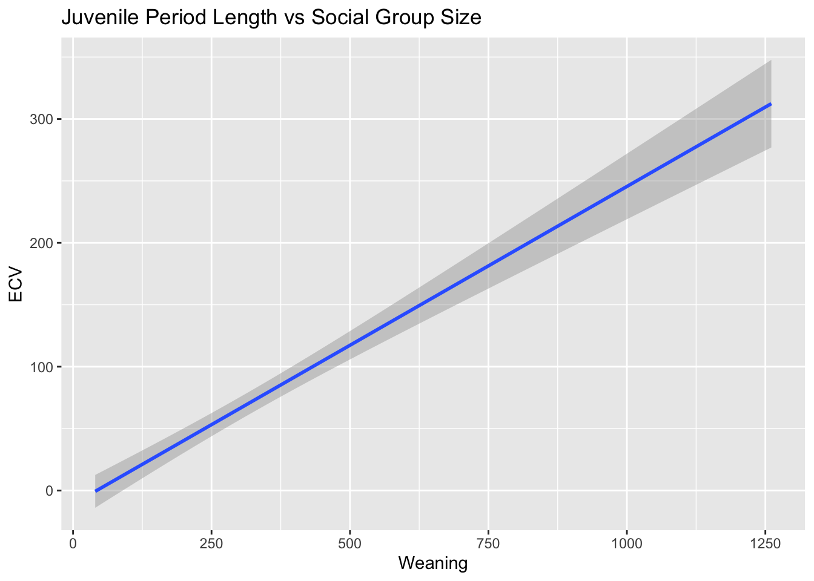
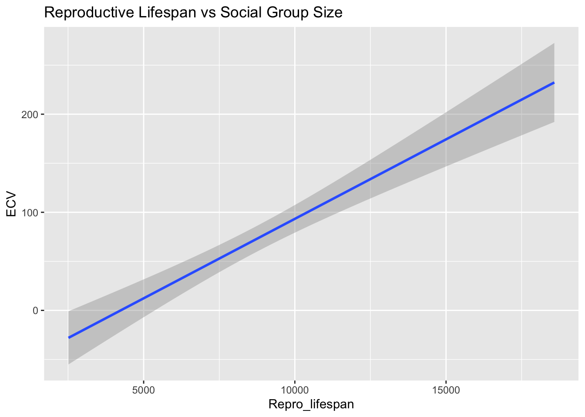
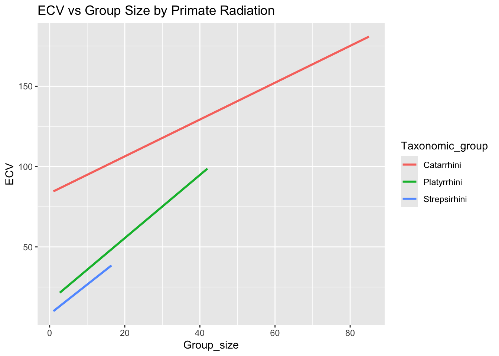

# Download the file and do a quick summaryf <-"https://raw.githubusercontent.com/difiore/ada-datasets/main/Street_et_al_2017.csv"library(readr)d <-read_csv(f, col_names =TRUE)
Rows: 301 Columns: 13
── Column specification ────────────────────────────────────────────────────────
Delimiter: ","
chr (2): Species, Taxonomic_group
dbl (11): Social_learning, Research_effort, ECV, Group_size, Gestation, Wean...
ℹ Use `spec()` to retrieve the full column specification for this data.
ℹ Specify the column types or set `show_col_types = FALSE` to quiet this message.
library(skimr)skim(d)
Data summary
Name
d
Number of rows
301
Number of columns
13
_______________________
Column type frequency:
character
2
numeric
11
________________________
Group variables
None
Variable type: character
skim_variable
n_missing
complete_rate
min
max
empty
n_unique
whitespace
Species
0
1
10
41
0
301
0
Taxonomic_group
0
1
10
12
0
3
0
Variable type: numeric
skim_variable
n_missing
complete_rate
mean
sd
p0
p25
p50
p75
p100
hist
Social_learning
98
0.67
2.30
16.51
0.00
0.00
0.00
0.00
214.00
▇▁▁▁▁
Research_effort
115
0.62
38.76
80.59
1.00
6.00
16.00
37.75
755.00
▇▁▁▁▁
ECV
117
0.61
68.49
82.84
1.63
11.82
58.55
86.20
491.27
▇▁▁▁▁
Group_size
114
0.62
13.26
15.20
1.00
3.12
7.50
18.23
91.20
▇▂▁▁▁
Gestation
161
0.47
164.50
38.00
59.99
138.35
166.03
183.26
274.78
▁▅▇▃▁
Weaning
185
0.39
311.09
253.08
40.00
121.66
234.16
388.78
1260.81
▇▃▁▁▁
Longevity
181
0.40
331.97
165.67
103.00
216.00
301.20
393.30
1470.00
▇▂▁▁▁
Sex_maturity
194
0.36
1480.23
999.23
283.18
701.52
1427.17
1894.11
5582.93
▇▆▂▁▁
Body_mass
63
0.79
6795.18
14229.83
31.23
739.44
3553.50
7465.00
130000.00
▇▁▁▁▁
Maternal_investment
197
0.35
478.64
292.07
99.99
255.88
401.35
592.22
1492.30
▇▅▂▁▁
Repro_lifespan
206
0.32
9064.97
4601.57
2512.16
6126.22
8325.89
10716.60
39129.57
▇▃▁▁▁
Plot ECV as a function of social group size (Group_size), longevity (Longevity), juvenile period length (Weaning), and reproductive lifespan (Repro_lifespan)
library(ggplot2)# ECV vs. Social Group Sizeggplot(d, aes(x = Group_size, y = ECV))+geom_smooth(formula = y ~ x, method ="lm")+labs(title ="Brain Size vs Social Group Size")
Warning: Removed 150 rows containing non-finite outside the scale range
(`stat_smooth()`).

# ECV vs. Longevity ggplot(d, aes(x = Longevity, y = ECV))+geom_smooth(formula = y ~ x, method ="lm")+labs(title ="Longevity vs Social Group Size")
Warning: Removed 189 rows containing non-finite outside the scale range
(`stat_smooth()`).

# ECV vs. Weaningggplot(d, aes(x = Weaning, y = ECV))+geom_smooth(formula = y ~ x, method ="lm")+labs(title ="Juvenile Period Length vs Social Group Size")
Warning: Removed 199 rows containing non-finite outside the scale range
(`stat_smooth()`).

# ECV vs Reproductive Lifespanggplot(d, aes(x = Repro_lifespan, y = ECV))+geom_smooth(formula = y ~ x, method ="lm")+labs(title ="Reproductive Lifespan vs Social Group Size")
Warning: Removed 211 rows containing non-finite outside the scale range
(`stat_smooth()`).

Calculating linear regression coefficients
library(tidyr)d <- d |>drop_na(ECV)d <- d |>drop_na(Group_size)# --- Calculate by hand ---groupsize <- d$Group_sizeecv <- d$ECVB1 <-sum((groupsize -mean(groupsize))* (ecv -mean(ecv))/sum(groupsize -mean(groupsize))^2)B0 <-mean(ecv) - B1*mean(groupsize)# --- Confirm with lm() function ---model <-lm(ECV ~ Group_size, data = d)summary(model)
Call:
lm(formula = ECV ~ Group_size, data = d)
Residuals:
Min 1Q Median 3Q Max
-92.05 -29.25 -15.14 13.07 445.28
Coefficients:
Estimate Std. Error t value Pr(>|t|)
(Intercept) 30.3565 6.7963 4.467 1.56e-05 ***
Group_size 2.4631 0.3508 7.021 7.26e-11 ***
---
Signif. codes: 0 '***' 0.001 '**' 0.01 '*' 0.05 '.' 0.1 ' ' 1
Residual standard error: 60.31 on 149 degrees of freedom
Multiple R-squared: 0.2486, Adjusted R-squared: 0.2436
F-statistic: 49.3 on 1 and 149 DF, p-value: 7.259e-11
Repeat the analysis
# Calculate seperate regressions by group library(purrr)models_cata <-lm(ECV ~ Group_size,data =subset(d, Taxonomic_group =="Catarrhini"))models_platy <-lm(ECV ~ Group_size,data =subset(d, Taxonomic_group =="Platyrrhini"))models_streps <-lm(ECV ~ Group_size,data =subset(d, Taxonomic_group =="Strepsirhini"))# confirm the coefficientscoef(models_cata)
(Intercept) Group_size
83.420592 1.146322
coef(models_platy)
(Intercept) Group_size
16.181212 1.965176
coef(models_streps)
(Intercept) Group_size
8.176384 1.840664
# Fit one combined model with an interaction to double checkinteraction_model <-lm(ECV ~ Group_size * Taxonomic_group, data = d)interaction_model
# Plot the models to visualize it and tirple checkggplot(d, aes(x = Group_size, y = ECV, color = Taxonomic_group)) +geom_smooth(method ="lm", se =FALSE) +labs(title ="ECV vs Group Size by Primate Radiation")
`geom_smooth()` using formula = 'y ~ x'

Answer: Yes, the regression coefficients differ among groups. To determine that, I calculated the individual coefficients of each group and visualized it to help me read the difference better.
Calculate the standard error for the slop coef, 95% CI, P-value by hand
# The easy way to knowsummary(model)
Call:
lm(formula = ECV ~ Group_size, data = d)
Residuals:
Min 1Q Median 3Q Max
-92.05 -29.25 -15.14 13.07 445.28
Coefficients:
Estimate Std. Error t value Pr(>|t|)
(Intercept) 30.3565 6.7963 4.467 1.56e-05 ***
Group_size 2.4631 0.3508 7.021 7.26e-11 ***
---
Signif. codes: 0 '***' 0.001 '**' 0.01 '*' 0.05 '.' 0.1 ' ' 1
Residual standard error: 60.31 on 149 degrees of freedom
Multiple R-squared: 0.2486, Adjusted R-squared: 0.2436
F-statistic: 49.3 on 1 and 149 DF, p-value: 7.259e-11